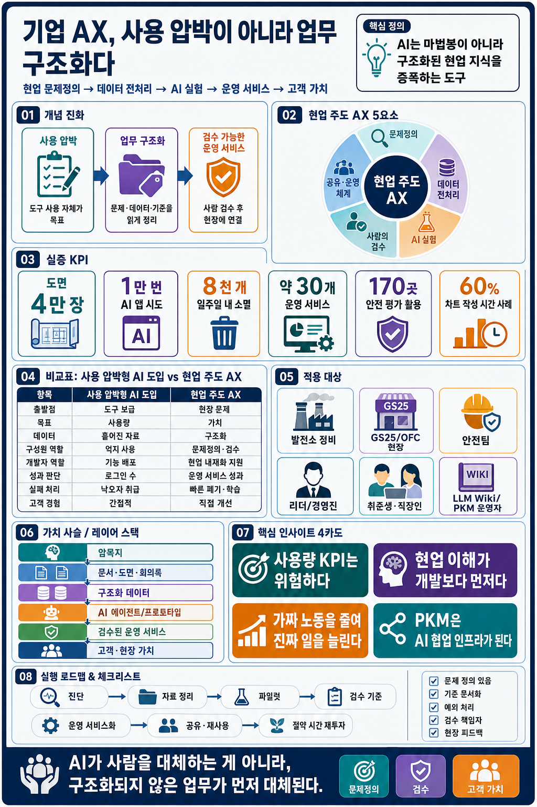

AI는 마법봉이 아니라 구조화된 현업 지식의 증폭기다
영상의 핵심은 “AI를 더 많이 쓰자”가 아니다. 현업 사람이 자기 문제, 데이터, 판단 기준, 예외 상황을 구조화할 때 AI가 실제 일을 줄이고 고객·현장 가치로 이어진다는 주장이다.
기업 AI 도입은 직원에게 AI 사용을 압박하는 일이 아니라, 현업자가 자기 문제와 데이터를 구조화해서 AI가 실제 업무 절감과 고객 가치로 이어지게 만드는 운영 체계다. 경쟁력은 툴 사용량이 아니라 문제정의, 데이터 전처리, 검수, 공유, 리더십 설계에서 나온다.
| 구분 | 핵심 |
|---|---|
| 한 문장 | AI는 사람을 대체하는 마법봉이 아니라, 구조화된 현업 지식을 증폭하는 도구다. |
| 가장 중요한 전환 | “AI 써라”에서 “업무를 구조화하고 남는 시간을 성장 기회로 연결하라”로 바뀌어야 한다. |
| 대표 사례 | 발전소 도면 4만 장 검색, GS25 현장 정보 알림, 안전 위험성 평가 서비스, 1만 번의 앱 시도와 30개 운영 서비스. |
| 개인 적용 | 내 업무 절차, 판단 기준, 예외 상황을 LLM이 읽을 수 있는 위키와 체크리스트로 남긴다. |
AI가 사람을 대체하는 것이 아니라, 구조화되지 않은 업무가 먼저 대체된다.
- “AI 강요보다 구조화”라는 중심 논지가 초반에 충분히 선명한가?
- 기업 AX와 개인 PKM의 연결이 과장 없이 설득되는가?
- GS 사례가 특정 기업 홍보처럼 보이지 않도록 비판적 거리감이 충분한가?
- “구조화되지 않은 업무가 대체된다”는 문장이 너무 강하면 어떤 보완 문장이 필요한가?
두 장의 이미지가 말하는 구조
첫 번째 이미지는 핵심 메시지를 빠르게 압축하고, 두 번째 이미지는 기업 AX의 구성 요소를 보드 형태로 펼친다. 리뷰 시에는 이미지가 본문 논지를 보조하는지, 아니면 별도 자료처럼 분리되어 보이는지를 확인하면 좋다.

- 이미지 두 장은 “요약형”과 “보드형”으로 역할이 분리되어 있다.
- 본문의 추상 논지를 시각적으로 고정하는 데 유용하다.
- 두 번째 보드 이미지는 모바일에서 세부 텍스트가 읽히는가?
- 이미지 캡션에 더 명확한 읽는 순서를 넣어야 하는가?
성패는 AI 사용률이 아니라 현업 문제를 얼마나 잘 구조화했는가에서 갈린다
직원에게 AI를 쓰라고 재촉하는 방식은 목적 없는 효율화로 흐르기 쉽다. 진짜 변화는 현업이 문제를 정의하고, 데이터를 정리하며, AI 결과를 검수할 때 생긴다.
왜 중요한가
- AI 불안은 피한다고 줄지 않는다. 직접 써보며 통제감을 얻을 때 두려움이 증강의 감각으로 바뀐다.
- 현업 이해가 개발보다 먼저다. 실제 병목, 예외, 사용자 언어는 현업 사람이 가장 잘 안다.
- 데이터 전처리는 여전히 사람의 일이다. 도면, 문서, 회의록, 업무 기준을 AI가 읽을 수 있게 만드는 과정이 핵심이다.
무엇을 경계할까
- AI 사용량 KPI는 성과를 보장하지 않는다.
- 검수 없는 결과물은 “AI 냄새”가 난다.
- 리더가 효율만 감시하면 절약된 시간은 성장 기회가 아니라 관리 문제가 된다.
- 사용 압박, 문제정의, 데이터 전처리, 검수, 리더십이 하나의 흐름으로 연결되는가?
- “현업 주도”가 개발자 역할 축소로 오해되지 않도록 균형이 잡혔는가?
- 논지에 반대하는 독자에게 필요한 반례나 제한 조건은 무엇인가?
- 대기업 사례를 중소기업이나 개인 업무에 적용할 때 빠지는 조건은 없는가?
영상 흐름을 따라가는 12개 장면
아래 타임라인은 리뷰어가 영상의 논리 전개를 빠르게 확인할 수 있도록 핵심 구간만 압축한 것이다.
- 영상은 불안 → 사례 → 성과 기준 → 리더십 → 개인 역량 순서로 확장된다.
- 타임라인은 독자가 원 영상으로 돌아가 검증하기 쉽게 만든다.
- 각 구간의 해석이 영상 발화와 충분히 분리되어 표시되는가?
- 타임라인이 길다면 핵심 6개와 전체 12개로 나누는 편이 나은가?
현업 문제에서 출발한 AI 사례들
이 영상이 흥미로운 이유는 AI 도입을 연구실이나 본사 전략실의 언어가 아니라 발전소, 편의점, 안전팀의 언어로 설명하기 때문이다.
1. AI 불안에서 통제 가능한 도구로 전환
영상은 동료가 AI를 써서 좋은 평가를 받는다면 어떤 감정이 들까라는 질문으로 시작한다. 이는 단순한 툴 사용의 문제가 아니라 성과 기준, 비교, 평가 방식, 생존 불안이 얽힌 문제다.
발전소 현장에서 설비를 정비하다 AI 직무로 전환한 출연자는 처음에는 GPT가 자신을 조종하는 느낌을 받았지만, 오히려 더 공부하면서 AI를 통제하는 법을 익혔다고 말한다. 핵심은 피하는 것이 아니라 직접 써보며 잘하는 일과 못하는 일을 구분하는 데 있다.
2. GS25 현장 정보 전달: 정보를 읽히게 만드는 것
상품 정보와 운영 정보는 회의와 공문으로 전달되지만, 점포에서는 손님 응대, 발주, 매장 운영 때문에 하나하나 읽기 어렵다. 그래서 현장 직원이 바이브 코딩으로 화면과 알림 구조를 실험한다.
이 사례의 핵심은 멋진 앱이 아니라 정보 흐름을 다시 설계하는 데 있다. 현장에서 놓치기 쉬운 정보를 한 줄 알림이나 이해하기 쉬운 설명으로 바꾸는 과정이 곧 AX의 출발점이다.
3. 발전소 도면 4만 장: 많다고 바로 쓸 수 있는 데이터는 아니다
발전소에는 정비에 필요한 도면과 문서가 매우 많다. 그러나 자료가 많다고 AI가 곧바로 이해하는 것은 아니다. 문서명, 형식, 기준, 연결 관계, 맥락을 사람이 정리해야 한다.
자료가 많으면 AI가 알아서 똑똑해질 것 같지만, 실제 기업 현장에서는 AI가 읽을 수 있는 구조로 바꾸는 데이터 전처리가 먼저다.
4. 안전 위험성 평가: 현업 디테일이 살아 있어야 실제로 쓰인다
안전팀 직원들이 책상에서 위험성 평가 문서를 작성하느라 현장을 볼 시간이 줄어드는 문제가 있었다. 이 문제를 바탕으로 만든 AI 작업 안전 위험성 평가 서비스는 공개 후 중소기업 170곳이 가져가 썼다고 한다.
추상 규정은 “안전 장비를 착용하라”라고 말하지만, 현업자가 만든 도구는 “도로 작업이면 형광색 조끼를 입어라”처럼 실제 언어로 바뀐다. 이 차이가 실무 적합성을 만든다.
| 사례 | 영상 속 문제 | AI/AX 접근 | 인사이트 |
|---|---|---|---|
| 발전소 도면 검색 | 도면이 4만 장이라 필요한 문서를 찾는 데 시간이 걸림 | 도면과 문서를 전처리하고 검색·질의 구조를 만듦 | 자료의 양보다 AI가 읽을 수 있는 구조가 중요하다. |
| GS25 현장 정보 알림 | 상품·운영 정보가 공문과 회의에 흩어져 현장 전달이 어렵다 | OFC가 바이브 코딩으로 알림과 화면을 실험 | 현업이 직접 화면을 만들면 문제 검증 속도가 빨라진다. |
| 안전 위험성 평가 | 안전 문서, 법규, 사고 사례를 알아야 하지만 문서 작성에 시간이 소모됨 | 실무형 위험성 평가 서비스를 만들고 중소기업에도 공개 | 현업 디테일이 들어간 도구가 외부에서도 바로 쓰인다. |
| 미니 상사 / AI 에이전트 | 사람의 판단 패턴과 회의 맥락을 반복해서 물어야 함 | 회의록과 대화 맥락으로 업무 보조 에이전트 실험 | 개인의 판단 로직도 구조화하면 재사용 가능한 자산이 된다. |
| 고객 경험 | AI가 고객 접점을 기계적으로 대체하면 반감이 생김 | 잔업을 줄여 사람이 고객, 환자, 현장 본업에 집중하게 함 | AI의 목적은 인간 접점을 없애는 것이 아니라 본업 품질을 높이는 것이다. |
- 각 사례가 단순 성공담이 아니라 구조화 원리를 보여주는가?
- 현업자와 개발자의 역할 분담이 현실적으로 설명되는가?
- 안전 서비스의 외부 확산 사례는 추가 출처 확인이 필요한가?
- “바이브 코딩”이라는 표현을 모르는 독자를 위해 짧은 설명이 필요한가?
닦달형 AI 도입과 현업 주도 AX는 출발점부터 다르다
AI 도입의 실패는 종종 기술 부족이 아니라 질문의 방향에서 시작된다. “직원들이 AI를 얼마나 썼나?” 대신 “어떤 현장 문제가 좋아졌나?”를 물어야 한다.
| 비교 축 | 닦달형 AI 도입 | 현업 주도 AX |
|---|---|---|
| 출발점 | “AI 좀 써봐”라는 사용 압박 | “어떤 현장 문제가 반복되는가?” |
| 목표 | 사용률, 교육 이수, 도입률 | 고객 가치, 현업 성과, 운영 서비스화 |
| 데이터 | 정리 안 된 문서와 맥락을 그대로 투입 | 문서명, 기준, 예외, 사례를 사람이 전처리 |
| 구성원 역할 | AI 사용자 | 문제정의자, 설계자, 검수자 |
| 개발자 역할 | 기능 구현자 | 구조, 안전, 스케일 판단자 |
| 성과 판단 | AI를 썼는가 | 일이 더 잘됐는가, 고객 가치가 생겼는가 |
| 실패 처리 | 실패를 비용으로만 봄 | 다수 실험 중 살아남는 서비스를 찾는 학습 과정 |
리더가 해야 할 일
- AI 사용 감시를 멈추기. 직원이 AI를 켰는지보다 어떤 일이 좋아졌는지 봐야 한다.
- 높은 목표를 새로 설계하기. 효율이 생기면 남는 시간을 더 큰 성장 과제로 연결해야 한다.
- 실패를 견디는 구조 만들기. 1만 번의 시도 중 일부만 운영 서비스가 되는 것은 탐색의 정상 비용이다.
- 경계가 흐려진 협업의 안전장치 만들기. 디자이너, 개발자, PM, 현업의 경계가 흐려질수록 구조, 보안, 품질 기준이 필요하다.
- 비교표가 조직의 도입 방식 차이를 명확히 보여준다.
- 1만 번의 실험 사례는 실패를 학습 비용으로 보는 관점을 강화한다.
- 숫자 사례가 독자에게 과감한 실험을 정당화하는 것처럼 오해될 위험은 없는가?
- 리더십 항목에 보안, 개인정보, 내부통제 기준을 더 명시해야 하는가?
기업 AX의 병목은 모델 성능보다 업무의 비정형성이다
1. 암묵지가 자동화의 진짜 장애물이다
뉴스 클리핑을 자동화하려고 해도 담당자가 어떤 기준으로 뉴스를 골랐는지 설명하지 못하면 AI는 자동화할 수 없다. 문제는 모델이 아니라 업무 기준이 사람 머릿속에만 있는 상태다.
2. 현업 주도 AI는 IT 조직을 대체하지 않는다
현업이 프로토타입을 만들면 IT 조직은 더 정확한 요구사항과 실제 사용 맥락을 받는다. 개발자의 역할은 구조, 보안, 확장성, 운영 안정성 판단으로 이동한다.
3. AI 사용량 KPI는 위험하다
사용량은 늘어도 업무 성과가 늘었다는 보장은 없다. 실험 수, 재사용 가능한 절차, 살아남은 운영 서비스, 고객·현장 가치가 더 나은 지표다.
4. PKM은 AI 시대 업무 인프라가 된다
개인이 판단 기준, 자료 경로, 예외 조건을 구조화하면 단순 노트가 아니라 AI와 협업하기 위한 데이터 전처리 자산이 된다.
- 전략 인사이트가 영상 근거에서 자연스럽게 확장되는가?
- PKM을 업무 인프라로 보는 주장이 독자에게 실천 가능한 형태로 이어지는가?
- “업무 비정형성”을 더 쉬운 말로 바꿀 필요가 있는가?
- 조직용 KPI 예시를 더 구체적으로 제시해야 하는가?
내 업무를 LLM Wiki처럼 구조화하기
영상 말미의 “내 경험을 LLM이 활용할 수 있게 자료 구조를 짜놓는 것”은 개인 지식관리의 방향과 맞닿아 있다. 업무 경험을 LLM-readable knowledge base로 바꾸는 일이 곧 개인의 AI 전처리다.
개인의 경험, 판단, 회의록을 LLM Wiki처럼 구조화하면 개인 생산성이 조직 AX 자산으로 확장된다. 중요한 것은 멋진 노트 앱이 아니라 AI가 읽을 수 있는 문제, 기준, 예외, 자료의 구조다.
내 업무에 바로 적용하는 질문
- 내가 반복해서 찾는 문서, 도면, 링크, 메모는 무엇인가?
- 업무를 잘하는 사람이 암묵적으로 쓰는 판단 기준은 무엇인가?
- 고객, 현장, 동료가 자주 묻는 질문은 무엇인가?
- AI에게 맡기기 전에 사람이 먼저 정리해야 할 예외 조건은 무엇인가?
- 결과물이 “AI 냄새”가 나지 않게 검수할 기준은 무엇인가?
LLM Wiki식 구조화 템플릿 보기
## 업무명 ### 1. 반복되는 문제 - 언제 발생하는가? - 누가 불편을 겪는가? - 지금은 어떻게 처리하는가? ### 2. 판단 기준 - 좋은 결과의 조건 - 피해야 할 결과 - 예외 상황 ### 3. AI가 읽어야 할 자료 - 문서/링크/도면/회의록 - 용어집 - 과거 사례 ### 4. 프롬프트/질문 패턴 - 방어 질문: 리더가 물을 만한 질문 5개 - 객관식 질문: 선택지 3~5개로 정리 - 검수 질문: 틀릴 가능성이 높은 부분 확인 ### 5. 재사용 결과물 - 체크리스트 - 보고서 초안 - 자동화 화면 - FAQ/가이드
실행 체크리스트
- 내 업무 중 매주 반복되는 탐색, 정리, 보고 작업 3개를 적는다.
- 각 작업의 입력 자료, 판단 기준, 예외 조건을 분리한다.
- AI에게 바로 던지기 전에 사람이 정리해야 할 데이터 전처리 목록을 만든다.
- 보고 전 “리더가 물을 질문 5개”를 AI에게 뽑게 한다.
- 결과물에서 AI 냄새가 나는 표현, 근거 없는 주장, 맥락 누락을 검수한다.
- 잘된 프롬프트와 절차를 LLM Wiki에 재사용 가능한 템플릿으로 저장한다.
- 절약된 시간을 어디에 재투자할지 고객, 현장, 성장 목표로 연결한다.
- 템플릿이 실제 독자의 업무에 바로 옮겨 쓰기 쉬운가?
- 개인 PKM과 기업 AX의 연결이 자연스러운가?
- 업무 구조화 예시를 하나 더 넣으면 적용성이 높아지는가?
- 개인 정보와 회사 기밀을 AI에 넣지 않도록 주의 문구가 필요한가?
강의와 컨설팅에서 재사용할 메시지
입문자 교육
“AI를 잘 쓰는 법”보다 “내 일을 AI가 읽을 수 있게 설명하는 법”이 먼저다.
조직 컨설팅
AI 도입 KPI는 사용률이 아니라 문제 해결률, 반복 업무 절감, 고객 접점 개선, 재사용 자산 수로 잡아야 한다.
리더십
AI로 절약된 시간의 감시가 아니라, 절약된 시간으로 도전할 성장 목표 설계가 리더의 일이다.
PKM
개인의 경험과 판단, 회의록을 LLM Wiki처럼 구조화하면 개인 생산성이 조직 AX 자산으로 확장된다.
핵심 개념
AX AI Transformation. 업무 방식, 데이터 구조, 조직 역할, 고객 경험을 AI 중심으로 재설계하는 변화. 현업 주도 AX 현업자가 직접 문제를 정의하고 AI·자동화 실험을 주도하는 방식. 데이터 전처리 AI가 문서, 도면, 회의록, 업무 기준을 이해할 수 있도록 이름, 형식, 맥락, 예외 조건을 정리하는 작업. AI 냄새 AI가 만든 티가 나는 평면적 문장, 근거 없는 자신감, 맥락 누락, 검수 부족의 흔적. LLM Wiki LLM이 탐색하고 활용할 수 있도록 경험과 지식을 구조화한 지식 베이스.
- 강의, 컨설팅, PKM 메시지가 서로 중복되지 않고 역할이 분리되는가?
- 용어 설명이 짧지만 충분한가?
- “AI 냄새” 같은 표현은 구어적 장점이 있지만 전문 문서에서는 다듬어야 하는가?
- 개념 정리에 보안, 거버넌스, 품질관리 용어를 추가해야 하는가?
계산기를 나눠준다고 수학 문제가 저절로 풀리지는 않는다
AI를 회사에 도입하는 것은 직원들에게 계산기를 나눠주고 무조건 계산기를 쓰라고 하는 것과 비슷하다. 계산기를 쓴다고 문제가 저절로 풀리지는 않는다. 먼저 어떤 문제를 풀어야 하는지 알아야 하고, 숫자를 제대로 적어야 하며, 계산 결과가 말이 되는지도 사람이 확인해야 한다.
기업 AI도 같다. 직원에게 “AI 써!”라고 말하는 것만으로는 변화가 생기지 않는다. 대신 각자가 자기 일을 이렇게 설명할 수 있어야 한다.
- 내가 반복해서 하는 일은 무엇인가?
- 그 일에서 시간이 오래 걸리는 부분은 어디인가?
- AI가 읽어야 할 자료는 무엇인가?
- AI가 틀리면 어떻게 검수할 것인가?
- 줄어든 시간을 고객, 현장, 더 큰 성장에 어떻게 쓸 것인가?
AI 시대에 강한 사람은 AI 버튼을 많이 누르는 사람이 아니라, 자기 일을 AI에게 설명할 수 있을 만큼 잘 구조화한 사람이다.
- 계산기 비유가 너무 단순하지 않으면서도 메시지를 쉽게 전달하는가?
- 마지막 문장이 글 전체의 결론으로 충분히 강한가?
- 비유 뒤에 실제 업무 예시를 하나 붙이는 것이 좋을까?
- 독자가 바로 행동할 수 있도록 다음 섹션과 더 강하게 연결해야 하는가?
지금 해야 할 일은 AI 사용 압박이 아니라 업무 경험의 구조화다
AI가 사람을 대체하는 것이 아니라, 구조화되지 않은 업무가 먼저 대체된다.
개인과 조직이 지금 해야 할 일은 AI 사용을 압박하는 것이 아니라, 업무 경험, 판단 기준, 데이터, 예외 상황을 정리해 AI가 활용 가능한 지식 구조로 바꾸는 것이다. 이 작업을 한 사람은 AI에게 밀리는 사람이 아니라, AI를 통해 더 큰 문제를 해결하는 사람이 된다.
이 글의 리뷰 기준은 명확하다. 독자가 읽고 난 뒤 “우리 조직은 AI를 얼마나 쓰고 있나?”보다 “우리 업무는 AI가 읽을 수 있을 만큼 구조화되어 있나?”를 묻게 된다면 목적을 달성한 것이다.
- 결론이 앞선 사례와 전략 분석을 충분히 회수하는가?
- 독자가 다음 행동을 떠올릴 만큼 구체적인가?
- 보안과 데이터 거버넌스를 결론에 짧게 넣어야 균형이 맞는가?
- 글의 제목을 더 직설적으로 바꿀 여지가 있는가?
Source: 스브스뉴스 SUBUSUNEWS · 하지만 해냈죠? EP.5 대기업 편. Capture: 2026-05-14 11:05:05 KST. 이 문서는 제공된 Obsidian 노트를 바탕으로 재구성한 독립형 HTML 리뷰룸입니다.
마지막 단계: 리뷰 피드백을 AI에게 전달하기
아래 항목을 확인하고 메모를 남긴 뒤, 버튼을 눌러 AI에게 보낼 피드백 초안을 복사하세요. 입력 내용은 이 브라우저 안에서만 사용됩니다.
리뷰 피드백 초안이 여기에 생성됩니다.